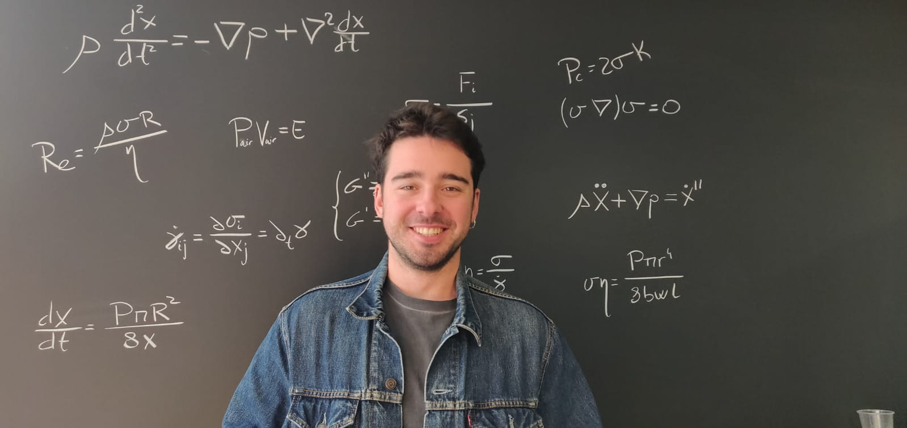

Featured article · Physics of Fluids · 2026
Damping dynamics of bubble-driven oscillatory flows
A single-author study combining theory and experiments to describe how trapped air damps oscillatory microfluidic flows.
Theoretical and Experimental Soft Matter Physicist specializing in fluid dynamics, microfluidics, and interfaces.

I am a soft matter physicist working mainly on fluid dynamics, microfluidics and interfacial phenomena. My research moves continuously between theory and experiment, especially in problems where a simple physical model can be tested directly against a carefully controlled system.
More about me →Two projects that best represent how I combine physical modelling with experiments.
A single-author study combining theory and experiments to describe how trapped air damps oscillatory microfluidic flows.

A physics-based model for liquid-gas front dynamics in microchannels driven by porous media pumps, developed and tested against experiments.
A compact view of the latest peer-reviewed work.